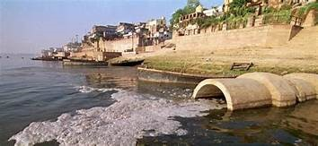
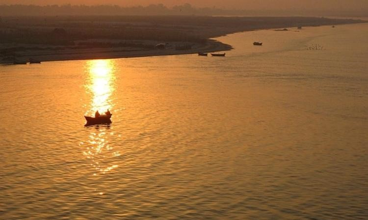
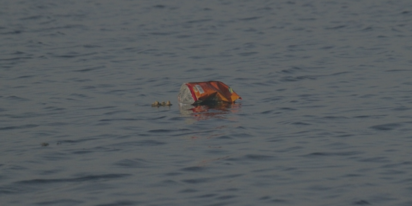
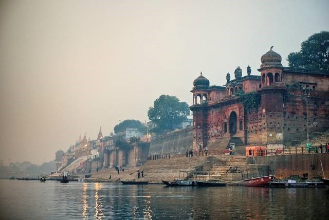

Government's water-wise endeavours towards water
conservation and the prevention of water pollution.
The Indian government has begun the process of building desalination facilities to satisfy the demands of those who do not have access to safe drinking water. The government has promoted rainwater collection systems on a considerable basis.[10] The Government of India has established National Water Mission as one of the eight National Missions under the National Action Plan on Climate Change. The Union Cabinet approved (on 6th April, 2011) the comprehensive Mission Document for National Water Mission (NWM). The main objective of NWM is “conservation of water, minimizing wastage and ensuring its more equitable distribution both across and within States through integrated water resources development and management”. NWM has identified five goals. The Water Resources Information System (WRIS) database contains information on 15,615 named rivers and streams in the United States. Several rivers have been recognised as part of the National River Conservation Plan (NRCP) and National Ganga River Basin Authority programmes (NGRBA). The NRCP has covered filthy segments of 31 rivers in 75 towns across 14 states at a cost of Rs. 4,517.82 crore.[1]
The Central Pollution Control Board (CPCB) has established a water quality monitoring network. 2101 locations are monitored on a monthly basis whereas 893 locations are on a half yearly basis and 6 locations on a yearly basis. Out of 38254 MLD of sewage generated by class I cities and class II towns, only 11787 MLD has been treated. There are no specific standards for discharge of treated sewage into streams. The sewage generation is estimated to be 62000 MLD approximately while sewage treatment capacity developed so far is only 23277 MLD from 816 STPs.[2] The National River Conservation Plan (NRCP) of India encompasses 190 towns and 41 rivers. Its objective has been to return the Ganga river to 'bathing class' status, as specified by India's DBU classification system. The NRCP has been chastised for a lack of collaboration among various implementing authorities, financing disparities among sites, and an inability to keep up with the expanding sewage burden.[3]
Some of the Indian laws that are being passed by the parliament of the country to monitor the pollution of water in the country.
Water Prevention and Control of Pollution Act, 1974
The prime object of this Act is to provide for the prevention of water pollution and cater to the maintenance of the water bodies. The Central Pollution Control Board has the power to advise the central government on various matters, which are concerned with the prevention and control of water pollution.
Relevance of Section 24 of this Act
Section24 of the Act imposes a duty upon a person to refrain from allowing any poisonous or noxious matter, as determined by the Central Pollution Control Board, into any stream or sewer. According to this Section, any person who contravenes with this Section shall be made liable to be punished with imprisonment of one year and six months which may extend up to six years.
The Shore Nuisance Bombay and Kolaba Act
This act aimed at safe navigation of the harbour in Bombay along with the objective of giving importance to the interest of the public. The Act empowered the land revenue collector of Bombay to issue a notice to remove the nuisances or obstructions which exist below the high water mark. Fine was imposed by this act for preventing the pollution of water.
Orissa River Pollution Act, 1953
Improper disposal of wastes has been one of the leading causes for the pollution of water in India. This Act was formulated with the view of regulating the disposal of waste and effluents into the river by the factories. Mahanadi and Brahmani amount to be the most polluted rivers amongst the rivers present in the state of Orissa. About 50 percent of water is polluted in these rivers which ultimately makes the survival of human life quite difficult.
The Water Prevention and Control of Pollution Cess Act, 2003
Industrial waste is one of the causes of water pollution. Water gets polluted through the toxic or non-biodegradable substances when the processing of these materials is being done in any industry. Such industries are required to pay cess under this law. Section 3 of this Act provides an exemption to industries from levying cess on those industries, which consume water below the specified limit.
The Indian Penal Code and Pollution
Under the Indian criminal law, provisions have been laid down to punish the person who commits an offence in contravention of the Code. Section 277 of the Code provides that the punishment for fouling of a public reservoir or a public spring voluntarily shall be liable to be punished with imprisonment of three months or with a fine of 500 Rupees.
The River Boards Act, 1956
The object of this Act is to resolve and regulate the inter-state water disputes. The Act gives the power to the State Government to establish Boards by issuing a special notification. Through this Act, awards and tribunals were being formulated to regulate the interstate disputes prevailing in a particular country.
Damodar Valley Corporation Prevention of Water Pollution Act, 1948
The Damodar Valley has been among the most flourished river basins which the country has witnessed since time immemorial. During the monsoon season, 80 percent of the waste from mines and industries is discharged into this river. This results in the pollution of water. With the view of keeping a check on the functioning of this valley, Damodar Valley Corporation was established.
Right To Clean Water: a Fundamental Right
The Indian Judiciary has initiated a positive step, with the view of controlling pollution of water. Under the Indian Constitution, the scope of Article 21, Article 48 and Article 51(g) can include the right to clean water. In the leading case of MC Mehta vs The Union of India, the court held that preventing the water of river Ganga from being polluted is the need of the hour. Along with society, the government also has a role to play in providing solutions to the issue of water scarcity. The government has taken several initiatives to deal with the water scarcity problem.[5] The recent one “Humara Jal, Humara Jeevan” is creating a great awareness among the masses. The initiative was undertaken to address the issue and to provide accurate solutions. The Government of India has adopted various initiatives to deal with the problem of water scarcity. Few of them are:The National Water Policy, Bharat Nirman, Humara Jal, Humara Jeevan, National Water Mission, National Mission for Clean Ganga, Namami Gange Initiative: Rejuvenating River Ganga Polluted waterways affect the standard of living of many Indian families. Toxic waste such as discarded plastic and domestic sewage is damaging the fishing industry. In an effort to combat water pollution, the Indian state of Kerala has started an initiative to recycle ocean plastic into materials for road construction. Repurposing ocean plastic for use in building materials reduces the cost of roads and water pollution. Cleaning and sorting the gathered plastic provides jobs to local women in Kerala. The project has collected about 176,000 pounds of plastic and has built 135 kilometers of road.
The National Water Policy (2012) has been formulated by the Department of Water Resources, RD &.GR, inter-alia, advocates rainwater harvesting and conservation of water. Central Ground Water Authority (CGWA) has issued directions under Section 5 of "The Environment Protection Act, 1986" for mandatory Rainwater Harvesting / Roof Top Rain Water harvesting. The Ministry of Rural Development in consultation and agreement with the Department of. Water Resources, RD & GR has developed an. actionable framework for Natural Resources Management (NRM) to ensure gainful utilization of funds. Mass awareness programmes (Trainings, Seminars, Workshops, Exhibitions, Trade Fares and.Painting Competitions etc.) are conducted from time to time each year in various parts of the Country to promote rainwater harvesting and artificial recharge to ground water. The Department of Land Resources is currently implementing 8214 watershed projects in 28 States covering an area of about 39.07 million ha. The major activities taken up under the WDC-PMKSY, inter-alia, include treatment, drainage line afforestation, soil and moisture conservation, rain water harvesting and horticulture. The Ministry of Housing & Urban Affairs has released Model Building Bye-laws, 2016 which recommends Rainwater Harvesting for all types of Building with plot size 100 sq.m or more.